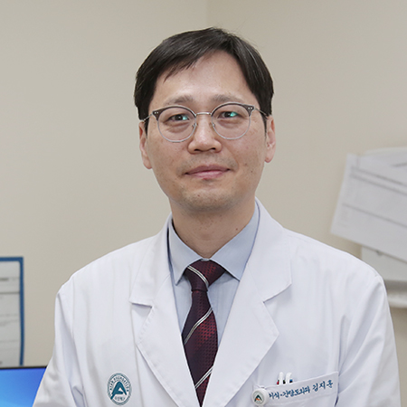
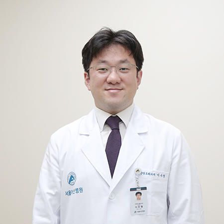
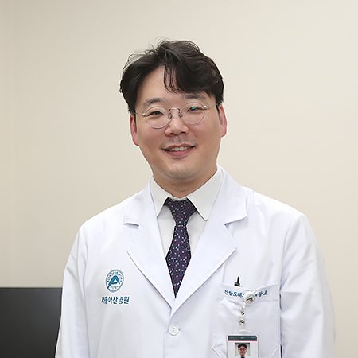
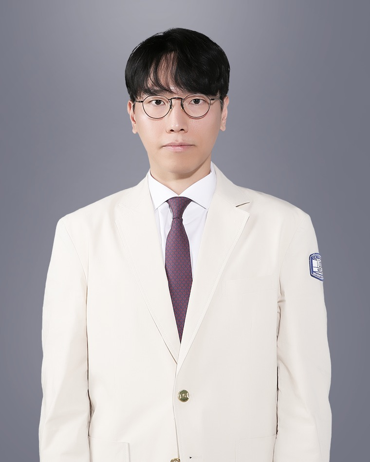
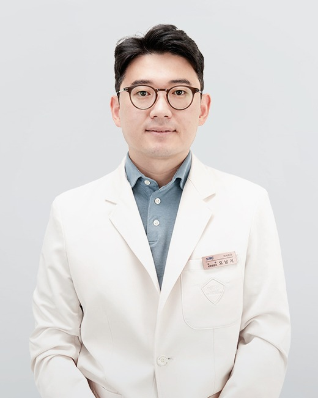
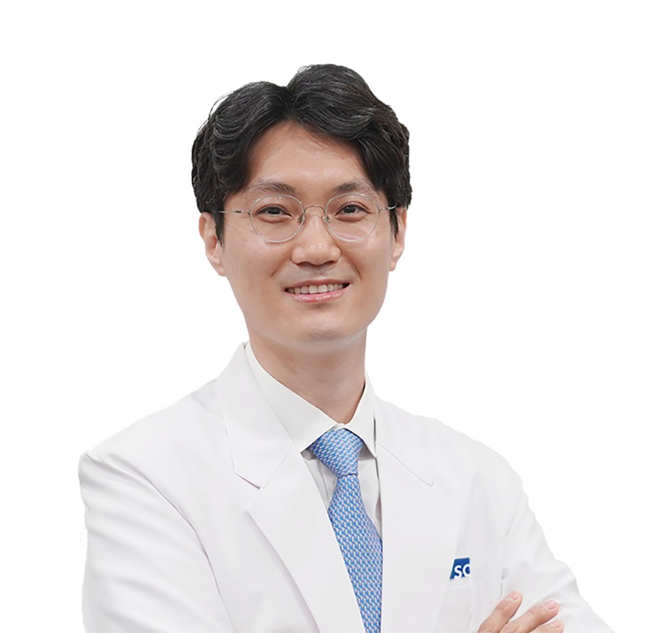
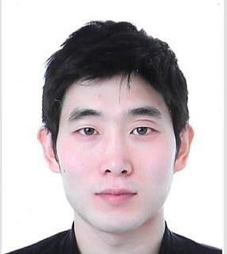
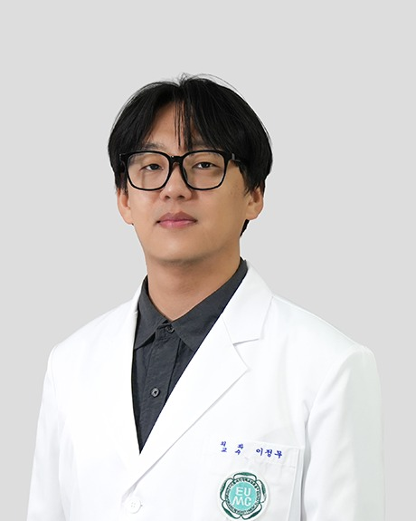
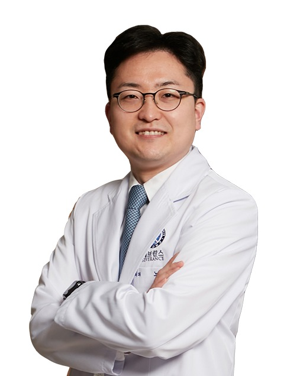

People멤버
Members함께하는 교수진
Hepato-pancreato-biliary surgeons from participating institutions across Korea lead AIMILS studies, share cases and teach through proctorship.전국 참여 기관의 간담췌외과 교수진이 AIMILS 연구를 이끌고, 증례를 공유하며, 프록터십으로 교육합니다.

Ji Hoon Kim김지훈 교수
김지훈 교수Ji Hoon Kim
Asan Medical Center서울아산병원
Liver Transplantation & Hepatobiliary Surgery간이식·간담도외과

Woohyung Lee이우형 교수
이우형 교수Woohyung Lee
Asan Medical Center서울아산병원
Division of HBP Surgery간담도췌장외과

Kwangpyo Hong홍광표 교수
홍광표 교수Kwangpyo Hong
Asan Medical Center서울아산병원
Division of HBP Surgery간담도췌장외과

Eui Soo Han한의수 교수
한의수 교수Eui Soo Han
Seoul St. Mary's Hospital서울성모병원
Department of Surgery외과

Namkee Oh오남기 교수
오남기 교수Namkee Oh
Samsung Medical Center삼성서울병원
Transplant Surgery, Dept. of Surgery외과 (이식외과)

Daegwang Yoo유대광 교수
유대광 교수Daegwang Yoo
Soonchunhyang University Seoul Hospital순천향대학교 서울병원
Department of Surgery외과

Jimin Son손지민 교수
손지민 교수Jimin Son
National Cancer Center국립암센터
Center for Liver and Pancreatobiliary Cancer간담도췌장암센터

Jeong-Moo Lee이정무 교수
이정무 교수Jeong-Moo Lee
Ewha Womans University Seoul Hospital이대서울병원
Department of Surgery (Organ Transplantation Center)외과 (장기이식센터)

Seoung Yoon Rho노승윤 교수
노승윤 교수Seoung Yoon Rho
Yongin Severance Hospital용인세브란스병원
Department of HBP Surgery간담췌외과
By institution기관별
| Institution기관 | Department소속 | Members멤버 |
|---|---|---|
| Asan Medical Center서울아산병원 | Liver Transplantation & Hepatobiliary Surgery간이식·간담도외과 | Ji Hoon Kim김지훈, Woohyung Lee이우형, Kwangpyo Hong홍광표 |
| Seoul St. Mary's Hospital서울성모병원 | Department of Surgery외과 | Eui Soo Han한의수 |
| Samsung Medical Center삼성서울병원 | Transplant Surgery, Dept. of Surgery외과 (이식외과) | Namkee Oh오남기 |
| Soonchunhyang University Seoul Hospital순천향대학교 서울병원 | Department of Surgery외과 | Daegwang Yoo유대광 |
| National Cancer Center국립암센터 | Center for Liver and Pancreatobiliary Cancer간담도췌장암센터 | Jimin Son손지민 |
| Ewha Womans University Seoul Hospital이대서울병원 | Department of Surgery (Organ Transplantation Center)외과 (장기이식센터) | Jeong-Moo Lee이정무 |
| Yongin Severance Hospital용인세브란스병원 | Department of HBP Surgery간담췌외과 | Seoung Yoon Rho노승윤 |
English name spellings are provisional and will be confirmed by each member.영문 이름 표기는 임시이며 각 멤버 확인 후 수정됩니다.